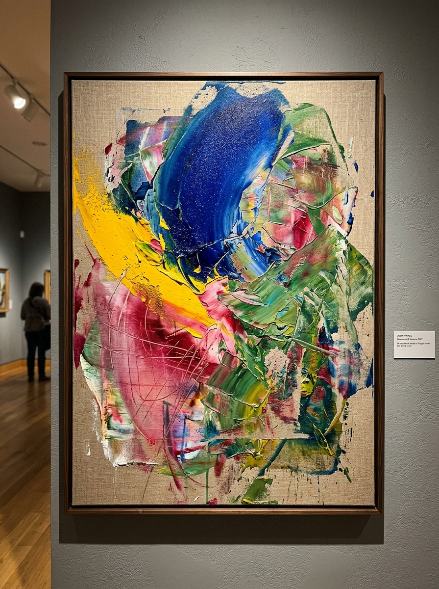
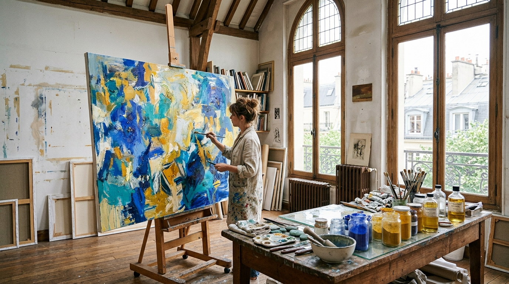

{{ artwork.category.toUpperCase() }}

{{ artwork.title }}
{{ artwork.medium }}
{{ artwork.dimensions }}
Contemporary painter investigating chromodynamics and tactile optical resonance across French Ultramarine, Cadmium Yellow, Rose Madder, and Viridian Green on traditional rabbit-skin gesso grounds.
Experience the frame-by-frame anatomical creation of a master oil canvas. Press play or drag the scrubber to watch raw stretched Belgian linen transform through imprimatura, knife block-in, and final crystalline dammar glaze.

{{ activeStageData.description }}
Paintings documented in museum high-resolution photography and vector SVG. Hover to examine in 3D perspective, or select any piece for curatorial analysis and acquisition details.
{{ artwork.medium }}
{{ artwork.dimensions }}
Rotate the physical 3D stretched canvas in real-time space. Inspect the raw Belgian linen wrapped edges, the cross-braced tulipwood stretcher bars on the reverse, and switch gallery lighting modes.

{{ artistName }} (b. 1988) works between Paris and Berlin. Her practice operates at the intersection of historical pigment chemistry and radical chromatic reduction. Rather than using an endless wheel of commercial tube colors, her entire studio output is restricted to four pure elemental pigments suspended in cold wax and walnut oil over traditional rabbit-skin gesso grounds.
“Limiting the palette to Ultramarine, Cadmium, Rose Madder, and Viridian is not a constraint—it is an amplification. In their optical tension lies the entire spectrum of psychological atmosphere: the nocturnal depth of lapis lazuli, the solar combustion of cadmium, the organic warmth of madder root, and the geological stability of chromium.”
Synthesized complex sodium polysulfide. Deep optical recession and spiritual silence.
Pure cadmium sulfide. Aggressive solar warmth that physically leaps from the canvas.
Natural alizarin rubia tinctorum lake. Translucent, flesh-like biological resonance.
Hydrated chromium sesquioxide. Cool, oceanic transparency that anchors the ground.
Select two or three raw pigment wells from the atelier workbench to calculate their optical mixture, transparency rating, and chemical resonance.
{{ mixtureResult.desc }}
Scroll to follow the dynamic progression of pure mineral raw materials into archival museum canvases. The conduit fills with pigment as you explore each step.
Before a brush touches linen, pure dry mineral crystals are weighed on jeweler's balances. Using a heavy optical glass muller on a chilled Carrara marble slab, pigments are mulled with cold-pressed Swedish walnut oil and bleached beeswax until a buttery, stringy paste forms.
Belgian flax linen (460 gsm) is stretched across custom-milled tulipwood stretcher bars. Eight alternating coats of hot rabbit-skin glue and Bolognese chalk are applied, then hand-sanded with water stones to yield a cool, absorbent ivory gesso surface that breathes like marble.
Compositions are conceived through vine charcoal drawings scored directly into the chalk. A dilute wash of raw viridian and French ultramarine (the imprimatura) is wiped across the canvas with linen rags, establishing the harmonic shadows and light hierarchy.
Using Japanese steel palette knives and hog-bristle brushes, dense impasto slabs of cadmium yellow and rose madder are laid down. Cold wax glazes build optical depth, while razor blades carve delicate sgraffito incisions through wet paint into the cool white gesso substrate beneath.
Completed canvases cure in climate-controlled studio racks for twelve months. A breathable isolation coat of retoucher's dammar is applied to equalize sheen and seal the four pigments, ensuring saturation and lightfastness for generations of museum display.
Selected museum retrospectives, institutional solo exhibitions, and international biennials.
Writings and reviews from international art periodicals and curatorial journals.
Delacroix’s mastery of the ultramarine-viridian spectrum creates an almost gravitational pull on the gallery floor. Her paintings refuse to remain inert surfaces.
One of the most compelling investigations into historical pigment chemistry operating in contemporary European abstraction today.
A luminous conversation between the deep biological earthiness of rose madder and the searing solar clarity of cadmium yellow.
A triumphant solo survey that reasserts the physical power of the painted ground in an era of disembodied digital imagery.
For acquisition inquiries, gallery representation, curatorial loans, or studio visits in Paris or Berlin, please reach out via the form or contact the atelier directly.
{{ activeModalArtwork.medium }}
{{ activeModalArtwork.dimensions }}
{{ activeModalArtwork.description }}
{{ activeModalArtwork.curatorialNote }}